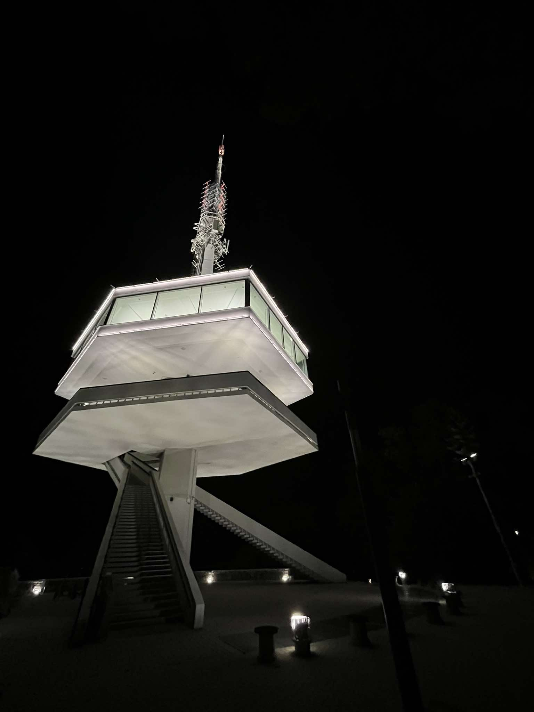
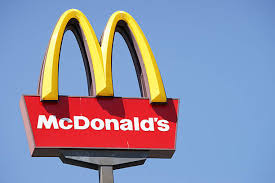
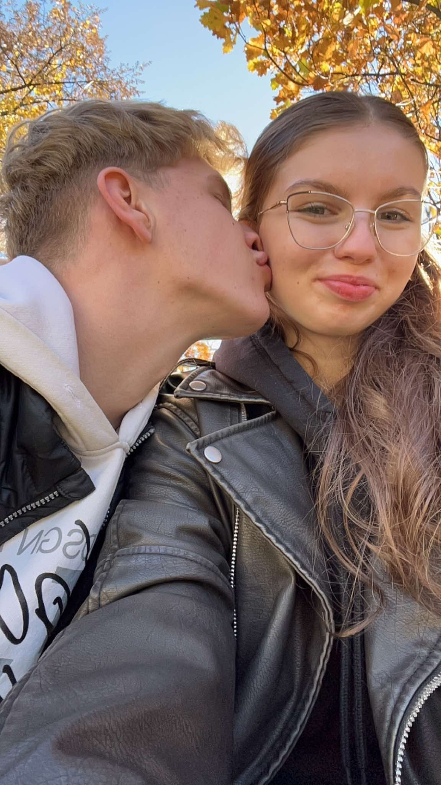
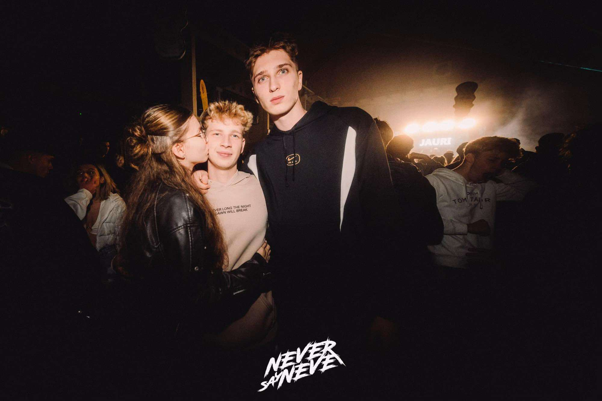
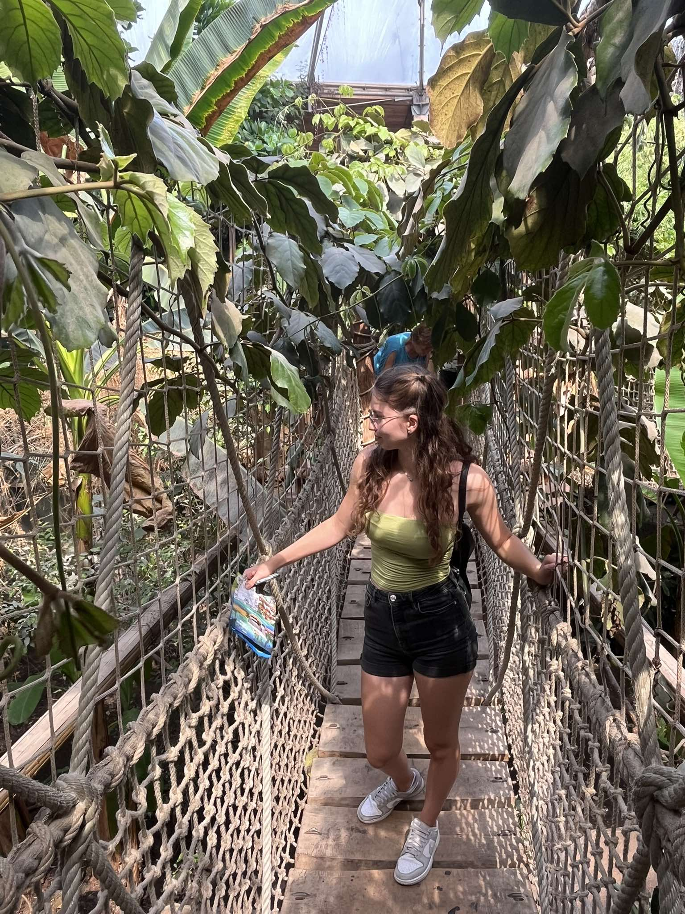
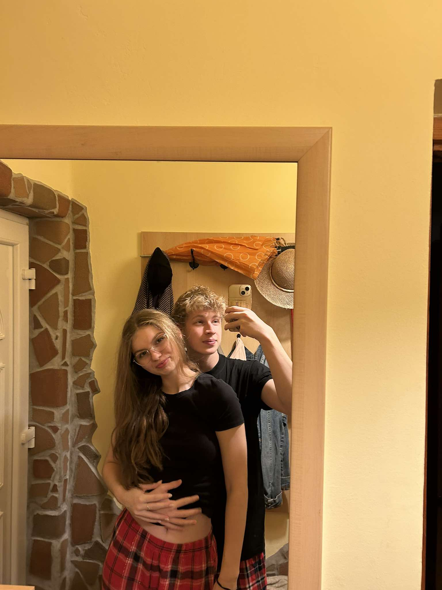
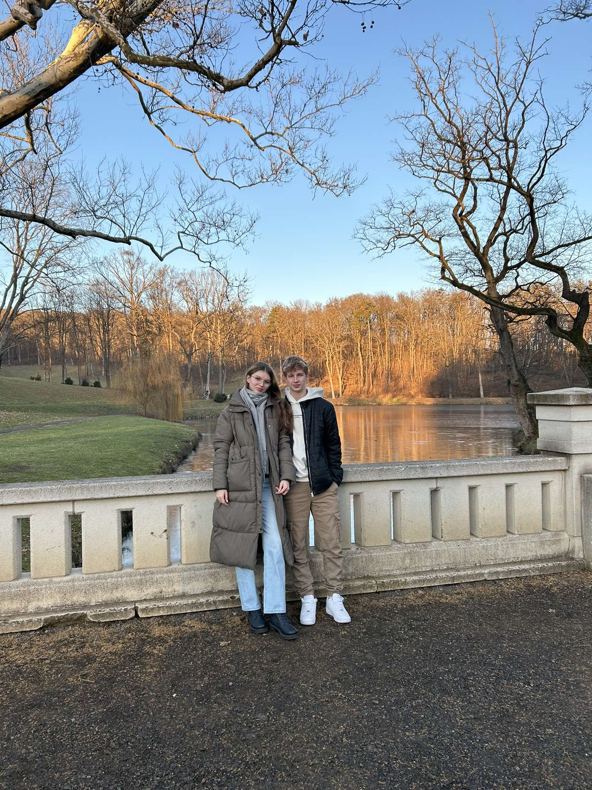
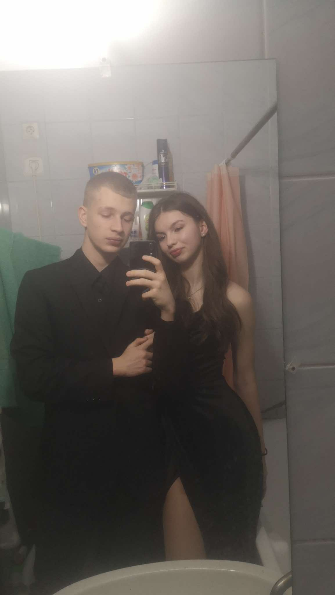

Ez volt a legelső hely, ahol találkoztunk, itt kezdődött minden. Itt történt meg az első csókunk is..
Rengeteg alkalommal jártunk már itt, vagy csak unatkozás miatt, vagy pedig hogy ne fagyoskodjunk.
Igazából a legtöbb időt itt töltöttük, de egyáltalán nem bánom. Legyen az izzasztó meleg, vagy fagyos hideg, mindig megéri itt bármennyit várni a másikra.
Buli van? Nekünk ott a helyünk! Felejthetetlen pillanatok.
Suli után, mindig itt kötünk ki általában. Elsőnek csak a bérházba üldögéltünk, most már pedig Vajákot nézünk fent. Szeretem ezt a helyet!
Itt is rengetegszer megfordultunk már, volt, hogy napokat, volt, hogy csak aludni jártunk haza. Mindenesetre ide is szép emlékek fűznek.
Legizgalmasabb, és talán leghosszabb utunk is. Főleg a vonatozás kikészít. De legalább feltaláltuk magunkat sokszor, és nézhettünk a sok makit. Köztük téged is.
Igaz, még nem voltam sokszor, de ha voltam is, akkor legalább sok időre. Nagyon-nagyon jók az itt töltött idők, mindig van mit csinálnunk.
Neked sokadik alkalom, nekem első, de még így is tökéletes volt.
Eddig nulla közöm volt ehhez a helyhez, de mióta te vagy, ha tehetem, téged nézlek miközben játszol. Már lassacskán ez is közös hely.
Nem gondoltam volna, hogy egy unalmas bál is ilyen jó lehet veled. Idén is megyünk, most már nálam alszol!
Összességében, kurvajó volt.